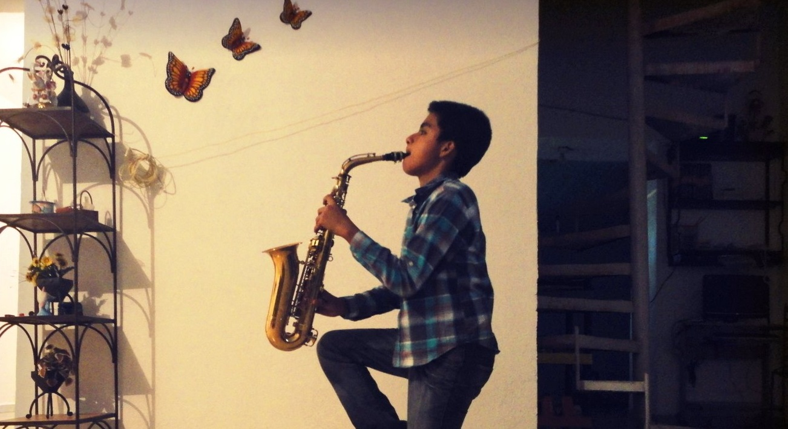
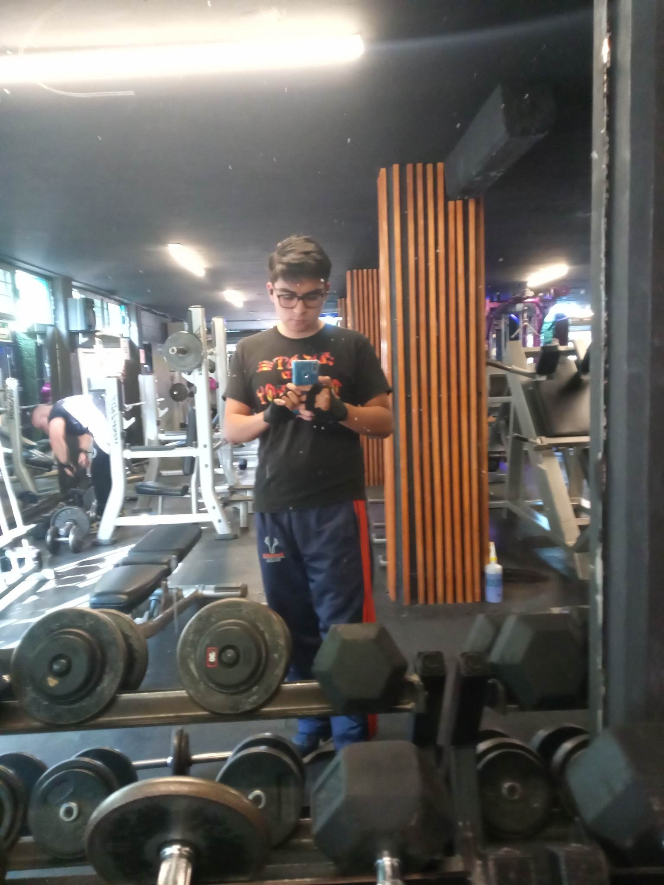
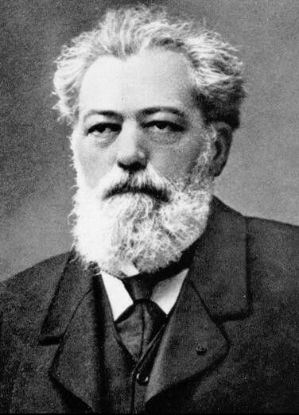
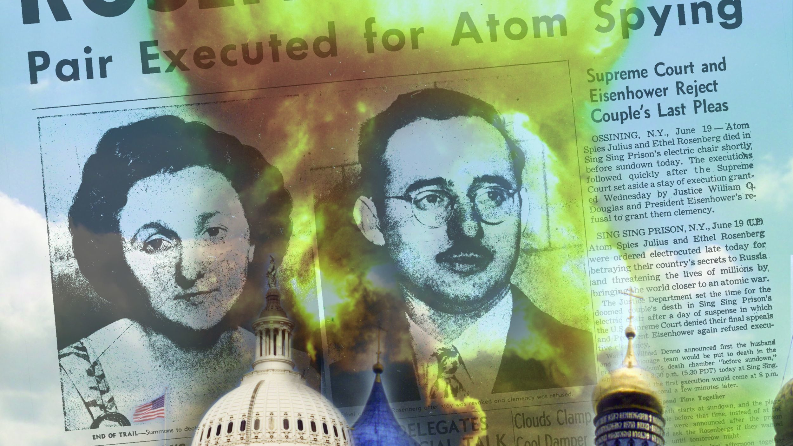

Sobre mí
Estudiante de Ing. en Sistemas Computacionales
Datos personales
Edad: 22 años
Ocupación: Estudiante
Correo electrónico: emanuel.rosiles.hidalgo@gmail.com
Intereses: Música, Videojuegos, Peliculas, Inteligencia Artificial.
Formación Académica
Preparatoria Diurna No. 1 "Lic. Bernabé L. de Elías" | UAEM
Bachillerato General (2016 - 2019)
Escuela Superior de Cómputo | IPN
Ing. en Sistemas Computacionales (2020 - En curso)

Hobbies
Skateboarding
Música
Gimnasio
Acerca de Criptografía
Étienne Bazeries (21 de agosto de 1846 - 7 de noviembre de 1931)
Fue criptoanalista militar francés que estuvo activo durante la Primera Guerra Mundial. Desarrolló el Cilindro Bazeries (un sistema de cifrado que ayuda a acelerar el proceso de cifrado y descifrado).
En 1891, Étienne Bazeries inventó un dispositivo de cifrado más sofisticado basado en los principios formulados por Thomas Jefferson de los Estados Unidos casi un siglo antes. El llamado cilindro criptográfico de Bazeries estaba compuesto por 20 discos giratorios numerados, cada uno con un alfabeto diferente grabado en su periferia. Los discos se colocaron en un orden acordado en un eje central y se giraron de modo que las primeras 20 letras del texto sin formato del mensaje aparecieran en una fila; luego, el texto cifrado se formó quitando arbitrariamente cualquier otra fila. Las letras restantes del mensaje fueron tratadas de la misma manera, 20 letras a la vez.
Fuente: Britannica, (2023). "Cipher". [Internet]. Disponible en: https://www.britannica.com/topic/cipher#ref287637
Algoritmo RSA

El algoritmo de clave pública RSA fuecreado en 1978 por Rivest, Shamir y Adlman, y es el sistema criptográfico asimétrico más conocido y usado. Estos señores se basaron en el artículo de Diffie-Hellman sobre sistemas de llave pública, crearon su algoritmo y fundaron la empresa RSA Data Security Inc., que es actualmente una de las más prestigiosas en el entorno de la protección de datos.
El sistema RSA se basa en el hecho matemático de la dificultad de factorizar números muy grandes. Para factorizar un número el sistema más lógico consiste en empezar a dividir sucesivamente éste entre 2, entre 3, entre 4,..., y así sucesivamente, buscando que el resultado de la división sea exacto, es decir, de resto 0, con lo que ya tendremos un divisor del número.
Fuente: D. Córdoba, (2016). "RSA: ¿Cómo funciona este algoritmo de cifrado?". [Internet]. Disponible en: https://juncotic.com/rsa-como-funciona-este-algoritmo/
Proyecto Venona
Iniciativa del gobierno de Estados Unidos conjuntamente con el Reino Unido durante la Segunda Guerra Mundial para interceptar y conocer las comunicaciones existentes entre uno de sus principales aliados durante aquel conflicto, la ex Unión Soviética, con sus representantes diplomáticos, políticos o militares; agentes encubiertos; redes de espionaje; o, simplemente, ciudadanos influyentes en los Estados Unidos.
El proyecto concentró y descifró los cablegramas y mensajes que circularon entre Moscú y América del Norte durante la guerra, y que, potencialmente, “amenazaban” la seguridad nacional del país del norte. El proyecto no llegó a conocerse, o sólo tuvieron conocimiento parcial de este, algunos presidentes norteamericanos. En un principio no pudieron descifrarse los contenidos de los mensajes, esto sólo ocurrió por un error de la inteligencia soviética, es así que el contenido de los mensajes permaneció en secreto hasta la caída del campo socialista, en la década de 1990, cincuenta años más tarde de haberse programado.
Fuente: EcuRed, (s.f.). "Proyecto Venona". [Internet]. Disponible en: https://juncotic.com/rsa-como-funciona-este-algoritmo/